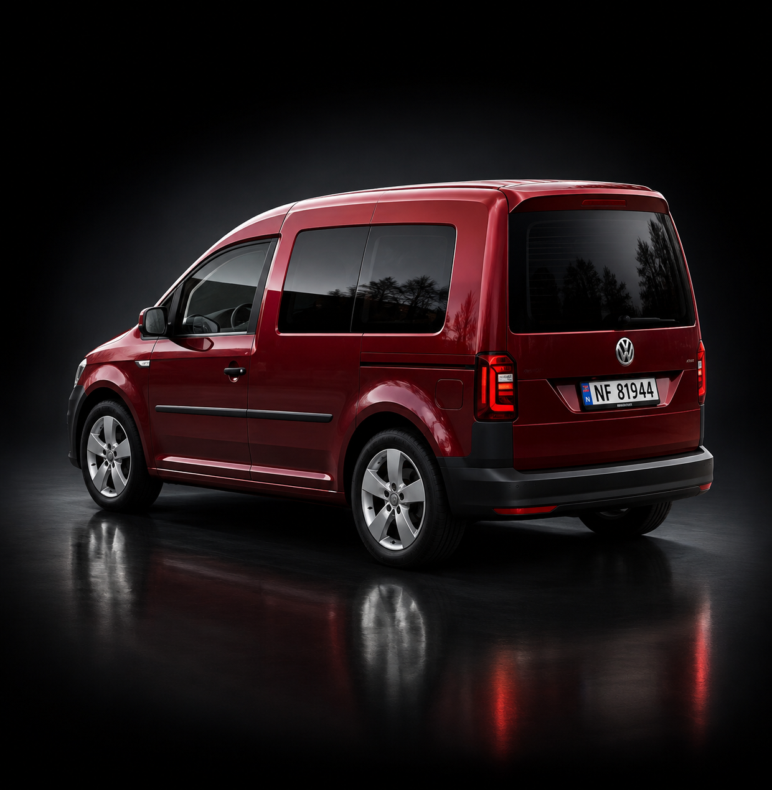

CaddY
Y

Drivstoffnivå: ukjent
Se på instrumentpanelet
Illustrativ stolpe. Ingen kontakt med bensintanken.
Åpne tanklokket manuelt
Klimakontroll
Ønsket temperaturAnalog premium
22°C
Temperaturen er et ønske, ikke en ordre.
Flere funksjoner
CaddY Fitness+
🏃 AktivitetTesla: 0 skritt
Hver gang du må gå til bilen, vinner kroppen over teknologien.
CaddY-skritt
0Estimerte kalorier
0,0 kcalHumorteller: anslåtte skritt for utførte oppdrag. Ikke faktisk måling.
CaddY Intelligence™ · Powered by human legs
Parodi. Ingen forbindelse til bilen, Volkswagen eller Tesla. Ikke la motoren gå på tomgang i garasje eller andre lukkede rom. Følg lokale regler om tomgangskjøring. Kalorier er grove underholdningsestimater, ikke helsedata.